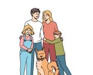

나를 나답게 만드는 것들

내가 나 답게 살아갈 수 있도록 도와주는 것에는 여러가지가 있습니다.
그 중에서도 가장 중요한 세 가지를 소개해 보려고 합니다.
첫번째, 나의 가족입니다.
저희가족 구성원은 총5명입니다.
남편, 딸, 아들, 막내아들 강아지 코코 그리고 저 입니다.
남편은 늘 제 꿈을 응원하고 자녀를 돌봄에있어 부족함이 없도록 도와주는 최고의 파트너입니다. 물론 가끔 제 기분을 뾰족해지게 만들기도합니다.
딸은 밝고 쾌할하고 에너제틱합니다. 가끔은 넘치는에너지에 지칠때도 있지만 저의 영원한 첫사랑입니다.
아들은 아직 어리광이많은 사랑둥이 입니다. 가끔 어른스러운말을 내뱉을 때 가 있어 신기한 생명체입니다.
우리가족의 사람을 독차지하는 막내, 코코는 저희집에 없어서는 안되는 존재입니다. 코코를 볼 때면, 이렇게 사랑스러운 아이를 낳은 코코의 진짜 가족이 궁금해집니다.
아마도 순하고 이쁜 강아지들이였을 것 같습니다.
두번째, 음악입니다.
예전에는 스트레스를 받을때엔 주로 먹는것으로 스트레스를 풀었습니다. 그러나, 건강이 안좋아 짐으로 인해 무언가 좀 더 긍정적인 방식으로 스트레스를 해소해야겠다고 생각하게되었습니다.
그래서 제가 찾은 것이 바로 음악 입니다. 요즘 주로듣는건 "질풍가도"입니다. 왠지 이 음악을 들으면서 집안일을하거나 산책을하면, 새로운 에너지로 다시금 채워지는 것 같아서 기분이 좋아집니다.
세번째, 양궁입니다.
자녀들의 취미로 시작한 양궁이 어느새 저희가족의 스포츠로 자리잡게 되었습니다. 매주 양궁장을 다니면서 저의 급한 성격과 욱하는 마음을 다독이고 있습니다.
그렇다고해서 지금 제 단점들이 완벽하게 컨드롤되는건 아닙니다. 하지만, 아주 미세하게나마 제 미간의 주름이 더 깊어지지않도록 하는데 역할을 하고있다고 생각합니다.
위의 세 가지가 있기에 제가 인간답게 살아가고 있다고 생각합니다.
저를 인간으로 살아가게 만드는것에는 이 외에도 여러가지가 있겠으나, 오늘도 저는 위의 3가지가 있기에 하루가 끝날땐 기쁜 얼굴로 마무리하고 잠에들 수 있을 것 같습니다.